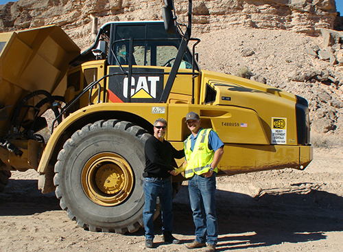
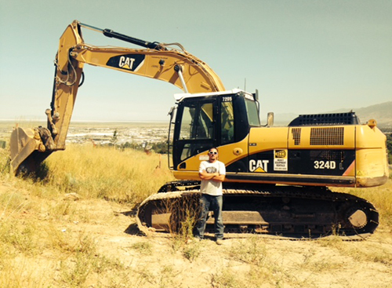
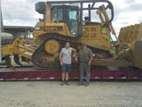
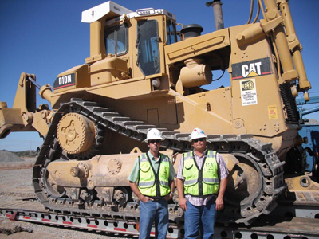
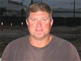
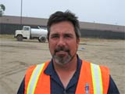
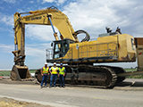

Hi Al,
Thanks for your ongoing support on this stop-and-go project. I cannot express how much we appreciate ECCO.
Regards,
Richard Cross
General Manager
Wadley Construction, Inc.
Las Vegas, NV

“ECCO Equipment Co. has been a critical partner on many of our jobs. They have come through for us on every occasion. I have been impressed by their flexibility in meeting all of our needs, including supplying the equipment we need when we need it, as well as keeping it running while it’s on the job. With fair pricing and the ability to meet all of our needs, we couldn’t be happier with them as one of our key equipment suppliers.”
Kevin Larkin
Salt Lake Excavating, INC.
Phone: (801) 577-8034
Fax: (801) 571-0058

ECCO Equipment is one of the finest companies we have ever dealt with for equipment. We needed to purchase a Caterpillar D6R and the newer ones were out of our budget, but we found one that ECCO had for sale in Phoenix, AZ. We called Mike Kustura at the main office in Santa Ana, CA and made arrangements with a heavy equipment shop to inspect for us. The inspector stated that he was familiar with ECCO and knew that the machine would be in good shape. After inspecting the dozer he stated he felt like he couldn't justify his inspection as he could find virtually no flaws. And after we purchased it and it was delivered, the dozer met all our expectations. Mike was very pleasant to deal with and helped us make transportation arrangements. He also helped us with a purchase of brush sweeps and transportation for these also. ECCO Equipment is very pleasant to deal with as was Mike Kustura. We WILL do business with them again.
PJ and Jim Aller
Aller's
Hiawatha, Kansas

Partnering with ECCO has allowed Austin to meet our equipment resources needs, which in turn has been monumental to the success of this project.
Scott Jones, PE
Sr. Project Manager
Austin Bridge & Road, LP
2528 E. University Drive
Suite 200
Phoenix, Arizona 85034

Be it Northern and Southern California ECCO’s range – Experience and fleet variety allows for our company to count on ECCO as a partner that understands our needs.
Eric, Project Manager
EBI.
Evan Brothers, Inc.
7589 National Drive
Livermore, CA 94550
(925) 443-0225

ECCO’s fleet size and selection coupled with their service ensure my jobs are always covered both operated and bare.
Howard, Sr. Project Manager
ICS.
Innovative Construction Solutions, Inc.
7125 Fenwick Lane, Suite O
Westminster, CA 92683
(714) 893-6366

Knife River began working with Paul McDade of ECCO Equipment early this year on renting your PC1100 excavator. Paul is very easy to communicate with and stayed on top of things as we went through this process. To start with the rate that had been discussed he got approved and followed up to make sure we were all good with it. When the time came to start getting ready he did some of the leg work for transporting the tractor and actually got us a better rate than we could find. Paul coordinated with Roger Kelly (Knife River Foreman), Maxim Crane, Renn Trucking and his mechanic Larry Andrea to get the tractor loaded at their yard in Sacramento. Trucks arrived the next morning in Stockton along with Larry Andrea. With the help of two Knife River mechanics Larry had the tractor unloaded and assembled that same day ready for work. We have had this unit on rent for a couple of months and another added convenience was ECCO Equipment having a yard here in Stockton. Any time we had a problem Roger called Scott Chadwick of ECCO Equipment and he took care of it. Scott was really great about working before or after shift even weekends so as not to impact the job and we suffered no down time. I can't thank everyone enough for the great experience we have had making this all come together and being successful at our job. Thank you all especially all of you at ECCO Equipment.
Jon Borgerding
Equipment Manager
Northern California Division
Knife River Construction